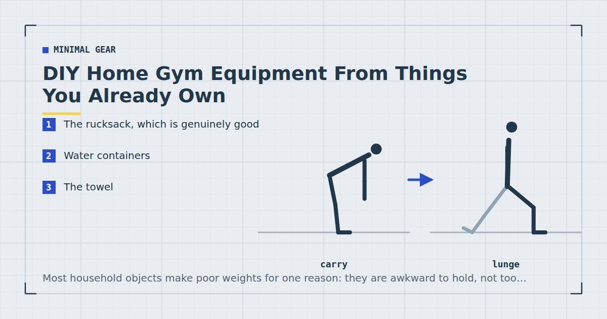

Minimal Gear
DIY Home Gym Equipment From Things You Already Own
Most household objects make poor weights for one reason: they are awkward to hold, not too light. A few are genuinely good, and one is better than most equipment you could buy.

The internet is full of household-object workouts, and most of them are worse than doing nothing extra. The problem is rarely weight — a bag of rice is heavy enough to matter. It is that you cannot hold most objects securely enough to train hard with them.
Four things in a typical home genuinely work. The rest is padding.
The rucksack, which is genuinely good
A backpack loaded with books is the best free training equipment most people own, and it is better than several things you could buy.
Why it works: it attaches the load to your torso rather than requiring you to grip it, so your hands stay free and the weight cannot be dropped. That makes it usable for exercises where holding something would be impossible — push-ups, pull-ups, split squats, step-ups.
Loading it: books, sealed water bottles, or bags of rice. Pack it tight so nothing shifts, heaviest items against your back, and use both shoulder straps plus the chest strap if it has one. A shifting load is the main thing that makes a loaded rucksack unpleasant.
How much: start with about five kilograms and add gradually. A well-packed 15-kilo rucksack turns a push-up or a split squat into a genuinely hard exercise, which is exactly what you need once bodyweight variations start running out — see can you build muscle with bodyweight only.
Worn on the front for pull-ups and rows, so it does not interfere with your back against a bar. This is also how a weighted vest works, and the comparison is in weighted vest training at home.
Water containers
A five-litre water container weighs five kilograms and has a moulded handle, which puts it well ahead of most improvised weights.
Good for: suitcase carries, single-arm rows, goblet-style squats held at the chest, and Romanian deadlifts. Anything where a handle and a moderate weight are what you need.
Poor for: overhead pressing, because the handle position is awkward and a container above your head is a bad place for something you might drop. And for anything requiring precise load increments, since you can only adjust by emptying it.
The useful trick: partially filling a container makes the water slosh, which adds an unstable-load element that increases the trunk demand considerably. Genuinely effective for carries.
Two containers of different sizes give you two weights for nothing, which is more adjustability than most improvised setups.
The towel
Not a weight, and arguably the most useful item on this list.
Rows. Looped around a sturdy door handle, a towel gives you a rowing exercise that requires trusting nothing but the door. It is the cheapest solution to the one gap in bodyweight training — see rows at home.
Sliders. On a hard floor, a towel under one foot slides, which unlocks hamstring curls, sliding lunges and mountain climbers with continuous tension — the full set is in furniture sliders for core and leg training.
Isometric pulls. Pulling outward against a towel held in both hands trains the back with no equipment at all, though isometric gains tend to be fairly specific to the angle trained.
Grip. Hanging from a bar with a towel over it is markedly harder than gripping the bar, which is a useful progression once pull-ups become easy.
Furniture that works
A sturdy dining chair. Dips, step-ups, split squats, incline push-ups, and a support point for balance. Solid wood, no castors.
A solid table. Inverted rows underneath it. Test it with gradual weight first — solid wood dining tables are usually fine, glass tops and flat-pack desks are not.
Stairs. The best free equipment in any house, because they give you platform heights in even increments — see stair workouts.
A wall. Wall sits, wall push-ups, handstand progressions, and a support for single-leg work.
What not to use
- Anything overhead you cannot grip securely. A dropped object above your head is a serious injury.
- Furniture on castors, for anything you lean or press on.
- Chairs with lightweight or flat-pack backs for dips. The backs are not designed for lateral load.
- Stacked objects to create a platform. They shift under a moving load.
- Balcony railings for rows or dips. Railings resist a horizontal push, not a person's weight in tension.
- Doors, rather than door frames. Hanging weight off a door damages hinges and may fail.
A session using only household items
Thirty minutes, nothing bought.
- Rucksack split squat — 3 × 8–12 each leg
- Rucksack push-up — 3 × 8–15
- Towel row on a door handle, or table row — 3 × 10–15
- Water container Romanian deadlift — 3 × 12–15
- Chair dip — 3 × 10–15
- Suitcase carry with a water container — 3 × 40 seconds each side
All five movement patterns, loaded, for nothing. Take the last set of each close to failure — with light and awkward loads, effort is what produces the adaptation.1
When to stop improvising
Improvised equipment has two real limitations, and both eventually bite.
Load increments. You can add a book, but you cannot add half a kilo reliably, and progressive overload is easier when the increments are predictable.
Awkwardness. Beyond a certain load, gripping a water container or balancing a rucksack becomes the limiting factor rather than the muscle you meant to train. When that happens, the improvisation has stopped working.
The sensible point to buy something is when a specific improvisation has clearly hit its ceiling — usually pulling first, which resistance bands or a pull-up bar solve properly. The order is in the minimalist home gym guide, and the cheap end of it in the best cheap home gym equipment under $50.
Until then, adult activity guidance asks for muscle-strengthening work covering all major muscle groups,2 and a rucksack full of books covers it perfectly well.
Where to go next
For the buying order once improvising stops working, see the minimalist home gym guide. For loading with a purpose-made version of the rucksack, see weighted vest training.
Frequently asked questions
What can I use instead of weights at home?
A rucksack loaded with books is the best option, because it attaches the load to your torso and leaves your hands free. Five-litre water containers work well for carries and rows thanks to their moulded handles, and a towel covers rowing and sliding exercises.
How much weight can I put in a rucksack?
Start around five kilograms and add gradually. A well-packed 15-kilogram rucksack makes push-ups and split squats genuinely hard. Pack it tight with the heaviest items against your back so nothing shifts.
Are water bottles good for working out?
Reasonably, for carries, single-arm rows and squats held at the chest. Poor for overhead pressing, since the handle position is awkward and a container above your head is a bad thing to drop. Partially filling one adds a useful unstable-load element.
What household items are unsafe to use for exercise?
Anything overhead you cannot grip securely, furniture on castors, lightweight or flat-pack chair backs for dips, stacked objects used as a platform, balcony railings, and doors rather than door frames.
When should I buy real gym equipment?
When a specific improvisation has clearly hit its ceiling — usually pulling first, where a towel on a door handle stops providing enough resistance. Resistance bands or a doorway pull-up bar solve that properly for very little money.
Sources and further reading
- Schoenfeld BJ, Grgic J, Ogborn D, Krieger JW. “Strength and Hypertrophy Adaptations Between Low- vs. High-Load Resistance Training: A Systematic Review and Meta-analysis.” Journal of Strength and Conditioning Research, 2017;31(12):3508–3523. PubMed.
- World Health Organization. WHO Guidelines on Physical Activity and Sedentary Behaviour. 2020.
- Schoenfeld BJ, Ogborn D, Krieger JW. “Dose-response relationship between weekly resistance training volume and increases in muscle mass: A systematic review and meta-analysis.” Journal of Sports Sciences, 2017;35(11):1073–1082. PubMed.
- NHS. Strength and Flex exercise plan.
Comments
Comments are not enabled yet. Add a hosted comment embed (Disqus, Commento, Giscus) inside this container when you are ready.